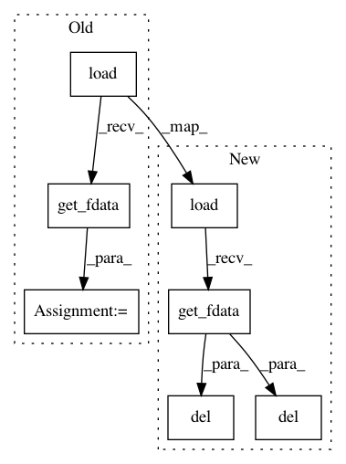

e4a36f3215735f8c351beb8f27edeb02eabb121f,pynets/dmri/track.py,,track_ensemble,#Any#Any#Any#Any#Any#Any#Any#Any#Any#Any#Any#Any#Any#Any#Any#Any#Any#Any#Any#Any#,191
Before Change
from dipy.direction import ProbabilisticDirectionGetter, BootDirectionGetter, ClosestPeakDirectionGetter, DeterministicMaximumDirectionGetter
if waymask:
waymask_img = nib.load(waymask)
waymask_data = waymask_img.get_fdata().astype("bool")
// Commence Ensemble Tractography
parcel_vec = list(np.ones(len(parcels)).astype("bool"))
streamlines = nib.streamlines.array_sequence.ArraySequence()
After Change
from dipy.direction import ProbabilisticDirectionGetter, BootDirectionGetter, ClosestPeakDirectionGetter, DeterministicMaximumDirectionGetter
if waymask:
waymask_data = nib.load(waymask).get_fdata().astype("bool")
// Commence Ensemble Tractography
parcel_vec = list(np.ones(len(parcels)).astype("bool"))
streamlines = nib.streamlines.array_sequence.ArraySequence()
ix = 0
circuit_ix = 0
stream_counter = 0
while int(stream_counter) < int(target_samples):
for curv_thr in curv_thr_list:
print("%s%s" % ("Curvature: ", curv_thr))
// Instantiate DirectionGetter
if directget == "prob":
dg = ProbabilisticDirectionGetter.from_shcoeff(mod_fit, max_angle=float(curv_thr), sphere=sphere)
elif directget == "boot":
dg = BootDirectionGetter.from_data(dwi_data, mod_fit, max_angle=float(curv_thr), sphere=sphere)
elif directget == "clos":
dg = ClosestPeakDirectionGetter.from_shcoeff(mod_fit, max_angle=float(curv_thr), sphere=sphere)
elif directget == "det":
dg = DeterministicMaximumDirectionGetter.from_shcoeff(mod_fit, max_angle=float(curv_thr), sphere=sphere)
else:
raise ValueError("ERROR: No valid direction getter(s) specified.")
for step in step_list:
print("%s%s" % ("Step: ", step))
// Perform wm-gm interface seeding, using n_seeds at a time
seeds = utils.random_seeds_from_mask(atlas_data_wm_gm_int > 0, seeds_count=n_seeds_per_iter,
seed_count_per_voxel=False, affine=np.eye(4))
if len(seeds) == 0:
raise RuntimeWarning("Warning: No valid seed points found in wm-gm interface...")
print(seeds)
// Perform tracking
if track_type == "local":
streamline_generator = LocalTracking(dg, tiss_classifier, seeds, np.eye(4),
max_cross=int(maxcrossing), maxlen=int(max_length),
step_size=float(step), return_all=True)
elif track_type == "particle":
streamline_generator = ParticleFilteringTracking(dg, tiss_classifier, seeds, np.eye(4),
max_cross=int(maxcrossing),
step_size=float(step),
maxlen=int(max_length),
pft_back_tracking_dist=pft_back_tracking_dist,
pft_front_tracking_dist=pft_front_tracking_dist,
particle_count=particle_count, return_all=True)
else:
raise ValueError("ERROR: No valid tracking method(s) specified.")
// Filter resulting streamlines by roi-intersection characteristics
roi_proximal_streamlines = Streamlines(select_by_rois(streamline_generator, affine=np.eye(4),
rois=parcels, include=parcel_vec,
mode="any",
tol=roi_neighborhood_tol))
print("%s%s" % ("Qualifying Streamlines by node intersection: ", len(roi_proximal_streamlines)))
roi_proximal_streamlines = nib.streamlines.array_sequence.ArraySequence([s for s in
roi_proximal_streamlines if
len(s) > float(min_length)])
print("%s%s" % ("Qualifying Streamlines by minimum length criterion: ", len(roi_proximal_streamlines)))
if waymask:
roi_proximal_streamlines = roi_proximal_streamlines[utils.near_roi(roi_proximal_streamlines,
np.eye(4),
waymask_data,
tol=roi_neighborhood_tol,
mode="any")]
print("%s%s" % ("Qualifying Streamlines by waymask proximity: ", len(roi_proximal_streamlines)))
// Repeat process until target samples condition is met
ix = ix + 1
for s in roi_proximal_streamlines:
stream_counter = stream_counter + len(s)
streamlines.append(s)
if int(stream_counter) >= int(target_samples):
break
else:
continue
// Cleanup memory
del dg
del seeds
del roi_proximal_streamlines
del streamline_generator
circuit_ix = circuit_ix + 1
print("%s%s%s%s%s" % ("Completed hyperparameter circuit: ", circuit_ix, "...\nCumulative Streamline Count: ",
Fore.CYAN, stream_counter))
print(Style.RESET_ALL)
print("\n")
// Final cleanup
del waymask_data
del stream_counter
del parcel_vec
del parcels
In pattern: SUPERPATTERN
Frequency: 3
Non-data size: 7
Instances
Project Name: dPys/PyNets
Commit Name: e4a36f3215735f8c351beb8f27edeb02eabb121f
Time: 2019-11-04
Author: dpisner@utexas.edu
File Name: pynets/dmri/track.py
Class Name:
Method Name: track_ensemble
Project Name: dPys/PyNets
Commit Name: e4a36f3215735f8c351beb8f27edeb02eabb121f
Time: 2019-11-04
Author: dpisner@utexas.edu
File Name: pynets/dmri/track.py
Class Name:
Method Name: prep_tissues
Project Name: dPys/PyNets
Commit Name: e4a36f3215735f8c351beb8f27edeb02eabb121f
Time: 2019-11-04
Author: dpisner@utexas.edu
File Name: pynets/dmri/track.py
Class Name:
Method Name: run_track